Depois de importar, verificar, organizar e transformar os dados, precisamos aprender a enxergá-los. Um gráfico pode revelar padrões difíceis de perceber em uma tabela, ajudar a formular novas perguntas e comunicar resultados.
Neste capítulo, a questão central será:
Qual representação visual nos ajuda a compreender cada aspecto dos dados?
NotaObjetivos do capítulo
Ao final deste capítulo, você deverá ser capaz de:
Cada linha representa uma pessoa. Entre as variáveis disponíveis estão salário por hora, escolaridade, experiência e permanência no emprego.
18.2 Visualizar também é investigar
Um gráfico não é apenas uma ilustração produzida no final da análise. Ele pode participar de diferentes etapas da investigação:
flowchart LR
A["Compreender<br/>a base"] --> B["Encontrar padrões<br/>e problemas"]
B --> C["Comparar<br/>grupos"]
C --> D["Reformular<br/>perguntas"]
D --> E["Comunicar<br/>resultados"]
classDef etapa fill:#DCEBDC,stroke:#355E3B,color:#1F3323,stroke-width:1.5px;
class A,B,C,D,E etapa;
linkStyle default stroke:#355E3B,stroke-width:1.5px;
NotaCódigo Mermaid do fluxograma
flowchart LR
A["Compreender<br/>a base"] --> B["Encontrar padrões<br/>e problemas"]
B --> C["Comparar<br/>grupos"]
C --> D["Reformular<br/>perguntas"]
D --> E["Comunicar<br/>resultados"]
classDef etapa fill:#DCEBDC,stroke:#355E3B,color:#1F3323,stroke-width:1.5px;
class A,B,C,D,E etapa;
linkStyle default stroke:#355E3B,stroke-width:1.5px;
Um gráfico bem construído não substitui a análise. Ele organiza evidências para que possamos descrevê-las e interpretá-las.
18.3 A gramática dos gráficos
O ggplot2 implementa uma gramática: construímos gráficos combinando componentes que cumprem funções diferentes.
Dados: a tabela que será visualizada.
Mapeamentos estéticos: relações entre variáveis e atributos visuais, definidas em aes().
Geometrias: elementos como pontos, barras, linhas e caixas.
Transformações estatísticas: cálculos realizados para produzir determinados elementos.
Escalas: tradução dos valores para posições, cores, tamanhos e rótulos.
Coordenadas: forma como os elementos são posicionados.
Facetamento: divisão dos dados em painéis.
Tema: aparência de elementos que não representam os dados.
flowchart TB
G["Gráfico"] --> D["Dados"]
G --> A["Estéticas<br/>aes"]
G --> M["Geometrias<br/>geom"]
G --> E["Escalas"]
G --> F["Facetas"]
G --> T["Tema"]
classDef centro fill:#C7DFC5,stroke:#355E3B,color:#1F3323,stroke-width:2px;
classDef componente fill:#EAF3E8,stroke:#355E3B,color:#1F3323,stroke-width:1.5px;
class G centro;
class D,A,M,E,F,T componente;
linkStyle default stroke:#355E3B,stroke-width:1.5px;
NotaCódigo Mermaid do fluxograma
flowchart TB
G["Gráfico"] --> D["Dados"]
G --> A["Estéticas<br/>aes"]
G --> M["Geometrias<br/>geom"]
G --> E["Escalas"]
G --> F["Facetas"]
G --> T["Tema"]
classDef centro fill:#C7DFC5,stroke:#355E3B,color:#1F3323,stroke-width:2px;
classDef componente fill:#EAF3E8,stroke:#355E3B,color:#1F3323,stroke-width:1.5px;
class G centro;
class D,A,M,E,F,T componente;
linkStyle default stroke:#355E3B,stroke-width:1.5px;
Não precisamos utilizar todos os componentes em todo gráfico. A construção ocorre de maneira incremental.
18.4 Construindo um gráfico camada por camada
Vamos investigar a relação entre experiência e salário por hora. Primeiro, informamos os dados e mapeamos as variáveis aos eixos:
ggplot(data = wage1_plot,mapping =aes(x = exper, y = wage))
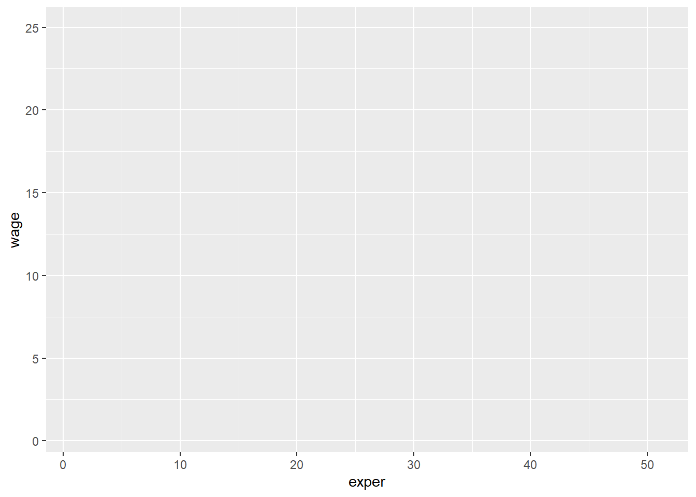
O R preparou eixos e escalas, mas ainda não sabe como representar cada observação. Acrescentamos uma camada de pontos:
ggplot(data = wage1_plot,mapping =aes(x = exper, y = wage)) +geom_point()
Podemos escrever a mesma construção de forma mais compacta:
ggplot(wage1_plot, aes(x = exper, y = wage)) +geom_point()
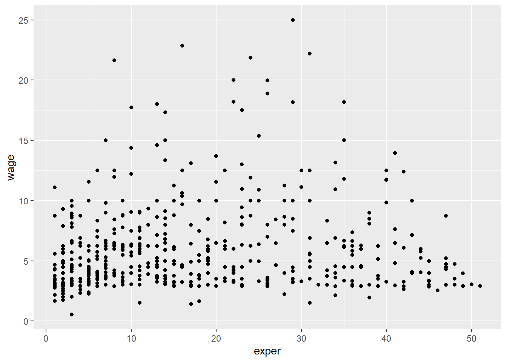
Cada ponto corresponde a uma pessoa. A posição horizontal representa sua experiência; a vertical, seu salário por hora.
18.5 Mapeamento estético e atributo fixo
Para relacionar a cor a uma variável, colocamos color dentro de aes():
ggplot(wage1_plot, aes(x = exper, y = wage, color = sexo)) +geom_point()
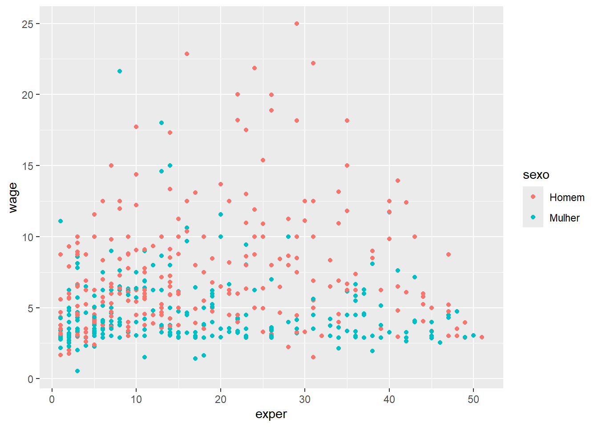
O ggplot2 cria uma legenda porque a cor representa uma variável. Se quisermos que todos os pontos tenham a mesma cor, colocamos o argumento fora de aes():
ggplot(wage1_plot, aes(x = exper, y = wage)) +geom_point(color ="#3F6B5B")
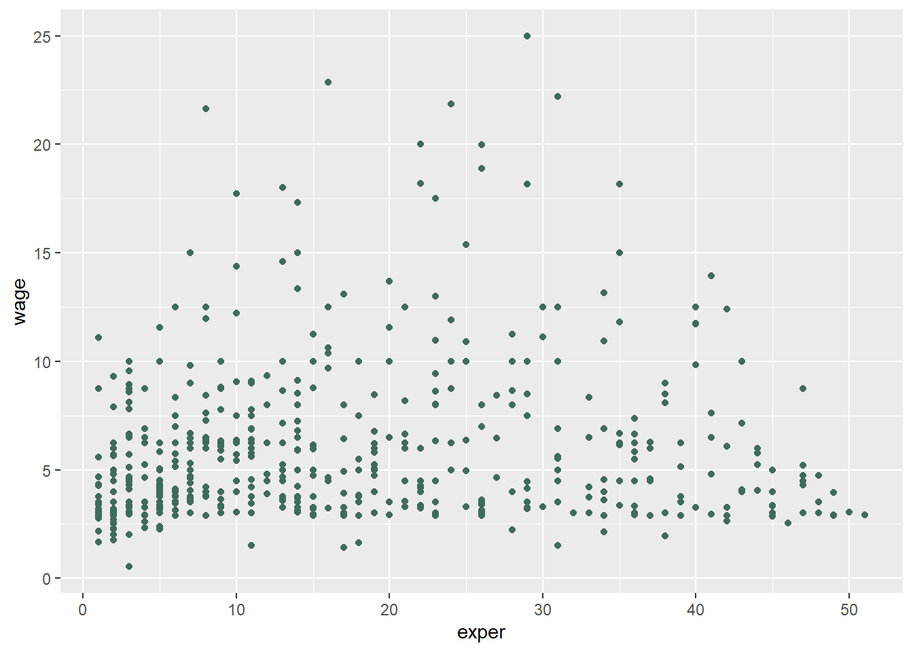
ImportanteDentro ou fora de aes()?
Dentro de aes(): o atributo visual representa uma variável dos dados.
Fora de aes(): o atributo recebe um valor fixo escolhido para a camada.
Essa diferença vale para cor, preenchimento, forma, tamanho e outras estéticas.
18.6 Forma, tamanho e transparência
Pontos sobrepostos podem esconder observações. A transparência, controlada por alpha, ajuda a perceber regiões mais concentradas:
ggplot(wage1_plot, aes(x = exper, y = wage, color = sexo)) +geom_point(size =2.5, alpha =0.55, shape =16)
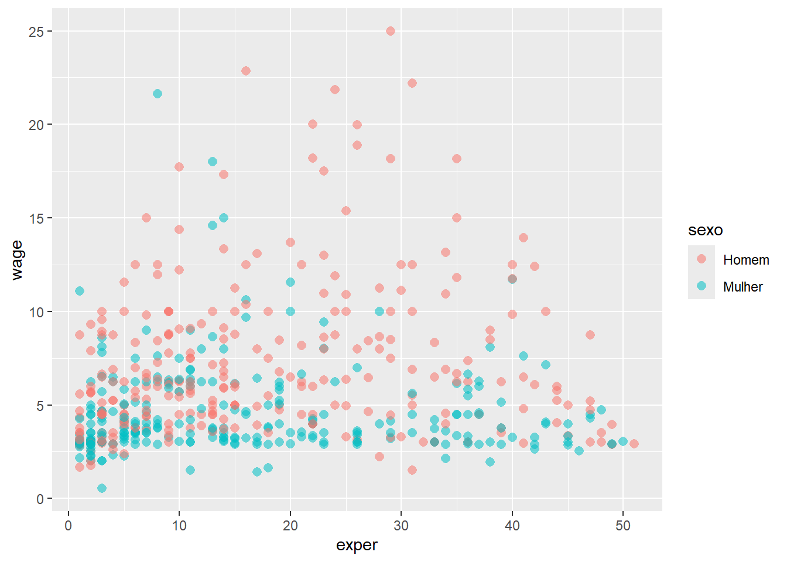
Essas escolhas foram aplicadas como atributos fixos. Não estamos afirmando que tamanho ou forma representam novas variáveis.
NotaAlgumas formas disponíveis
shape = 0: quadrado vazio;
shape = 1: círculo vazio;
shape = 2: triângulo vazio;
shape = 15: quadrado preenchido;
shape = 16: círculo preenchido;
shape = 17: triângulo preenchido;
shape = 18: losango preenchido.
Não é necessário memorizar os códigos. Consulte-os quando houver uma razão para diferenciar grupos pela forma.
O facetamento facilita a comparação quando muitos elementos se sobrepõem. Entretanto, painéis separados também tornam menos imediata a comparação de pontos individuais.
18.8 Títulos, rótulos e temas
Um gráfico destinado à comunicação precisa indicar claramente o que representa:
ggplot(wage1_plot, aes(x = exper, y = wage, color = sexo)) +geom_point(alpha =0.55) +labs(title ="Salário por hora e experiência",subtitle ="Pessoas da amostra wage1",x ="Experiência potencial (anos)",y ="Salário por hora (US$)",color ="Sexo",caption ="Fonte: wage1, pacote wooldridge." ) +theme_minimal()
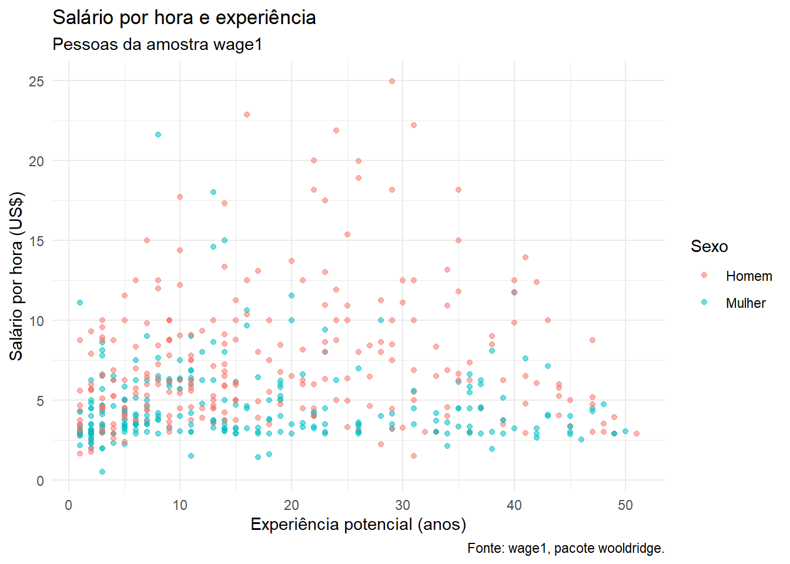
labs() altera textos; theme_minimal() modifica a aparência dos elementos que não representam diretamente os dados.
Outros temas incluídos no ggplot2 são theme_bw(), theme_classic() e theme_light().
18.9 Gráficos de barras
Gráficos de barras são adequados para comparar categorias. geom_bar() conta as observações automaticamente:
ggplot(wage1_plot, aes(x = sexo, fill = sexo)) +geom_bar(show.legend =FALSE) +labs(title ="Número de pessoas por sexo",x =NULL,y ="Número de pessoas" ) +scale_fill_manual(values =c("Homem"="#7185CC", "Mulher"="#C2986F")) +theme_minimal()
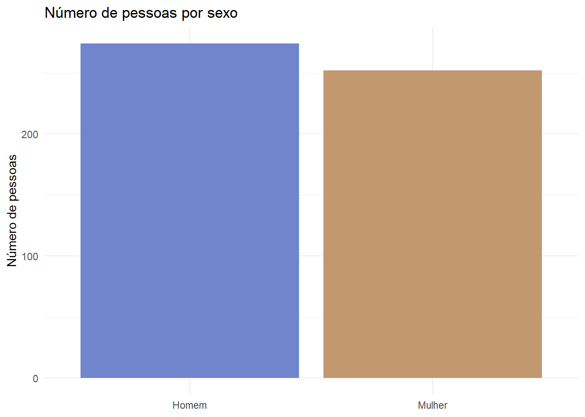
Quando os valores já foram calculados, utilizamos geom_col(). Primeiro produzimos a tabela:
# A tibble: 2 × 2
sexo salario_medio
<fct> <dbl>
1 Homem 7.10
2 Mulher 4.59
Depois representamos seus valores:
ggplot(salario_sexo, aes(x = sexo, y = salario_medio, fill = sexo)) +geom_col(width =0.65, show.legend =FALSE) +labs(title ="Salário médio por hora, por sexo",x =NULL,y ="Salário médio por hora (US$)" ) +scale_fill_manual(values =c("Homem"="#7185CC", "Mulher"="#C2986F")) +theme_minimal()
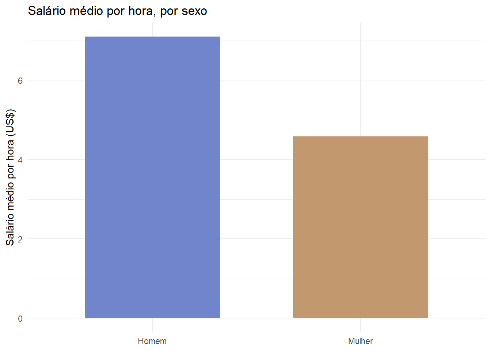
Dicageom_bar() ou geom_col()?
geom_bar(): o ggplot2 conta as linhas de cada categoria.
geom_col(): a altura da barra vem de uma variável previamente calculada.
Uma barra de média resume toda a distribuição em um número. Antes de concluir que os grupos são muito diferentes ou semelhantes, precisamos examinar a dispersão dos valores.
18.10 Histogramas
Um histograma divide uma variável numérica em intervalos e mostra quantas observações estão em cada intervalo:
ggplot(wage1_plot, aes(x = wage)) +geom_histogram(bins =20,fill ="#7185CC",color ="white",alpha =0.8 ) +labs(title ="Distribuição do salário por hora",x ="Salário por hora (US$)",y ="Frequência" ) +theme_minimal()
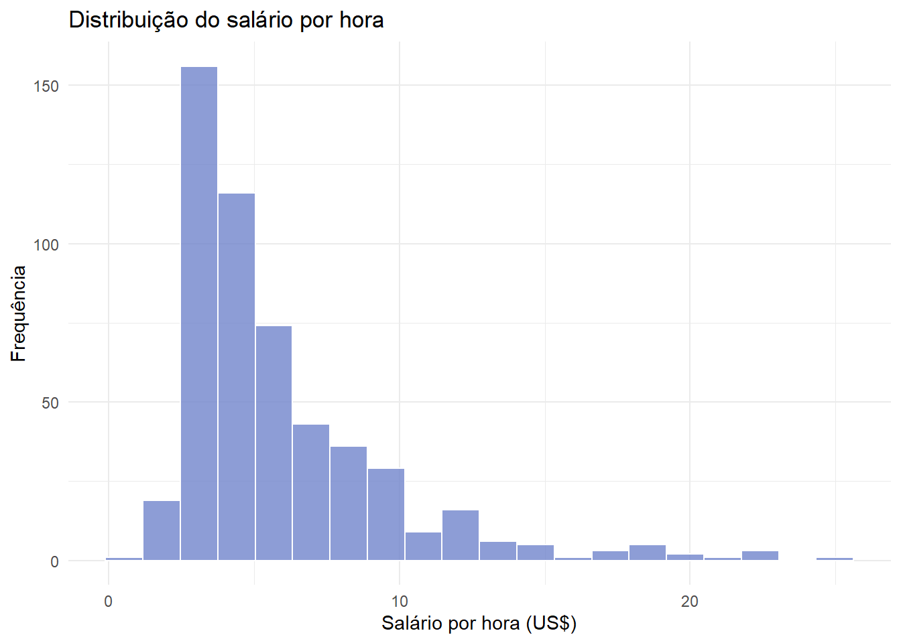
O argumento bins controla o número de intervalos. Alterá-lo pode revelar ou esconder detalhes; por isso, vale experimentar mais de uma configuração.
18.11 Curvas de densidade
geom_density() apresenta uma versão suavizada da distribuição:
ggplot(wage1_plot, aes(x = wage, fill = sexo)) +geom_density(alpha =0.45) +labs(title ="Distribuição salarial por sexo",x ="Salário por hora (US$)",y ="Densidade",fill ="Sexo" ) +scale_fill_manual(values =c("Homem"="#7185CC", "Mulher"="#C2986F")) +theme_minimal()
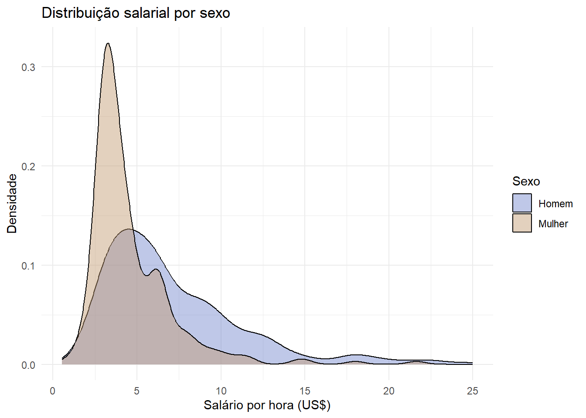
A densidade não mostra diretamente o número de pessoas. Sua área total é igual a 1, o que facilita comparar formas de grupos com tamanhos diferentes.
18.12 Boxplots
O boxplot resume posição, dispersão e possíveis valores extremos:
ggplot(wage1_plot, aes(x = sexo, y = wage, fill = sexo)) +geom_boxplot(alpha =0.75, show.legend =FALSE) +labs(title ="Distribuição salarial por sexo",x =NULL,y ="Salário por hora (US$)" ) +scale_fill_manual(values =c("Homem"="#7185CC", "Mulher"="#C2986F")) +theme_minimal()
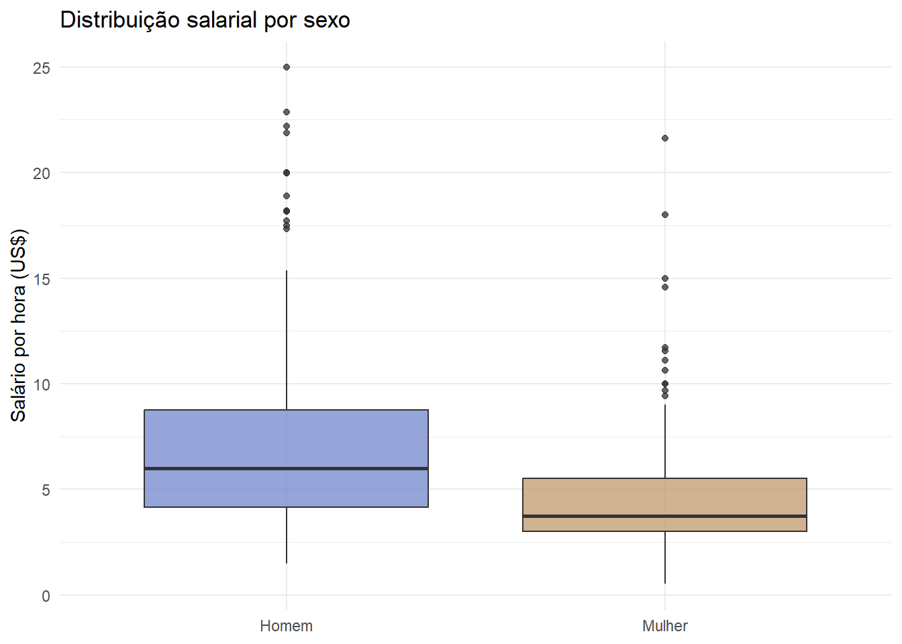
No Capítulo 20, estudaremos detalhadamente quartis, assimetria e a regra utilizada para sinalizar valores extremos.
18.13 Gráficos de dispersão
Quando as duas variáveis são numéricas, o gráfico de dispersão ajuda a examinar sua relação:
ggplot(wage1_plot, aes(x = educ, y = wage, color = sexo)) +geom_jitter(width =0.15, height =0, alpha =0.5) +labs(title ="Salário por hora e escolaridade",x ="Escolaridade (anos)",y ="Salário por hora (US$)",color ="Sexo" ) +theme_minimal()
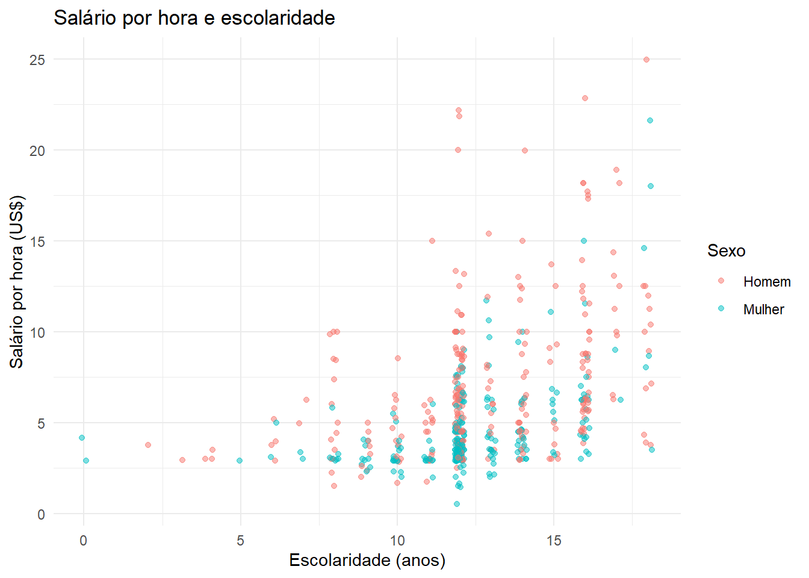
Como escolaridade assume valores inteiros, muitos pontos ocupariam exatamente a mesma posição. geom_jitter() acrescenta um pequeno deslocamento horizontal apenas para tornar a sobreposição visível; os dados originais não são modificados.
O gráfico permite observar associação, mas não demonstra que escolaridade causa determinado salário. Essa distinção será retomada nos capítulos 20 e 21.
18.14 Gráficos de linhas
Linhas são especialmente úteis quando as observações possuem uma ordem, como datas. Não devemos ligar categorias ou pessoas apenas porque conseguimos ordená-las.
Para aprender a geometria, utilizaremos economics, uma base didática distribuída com o ggplot2, contendo séries mensais dos Estados Unidos:
ggplot(desemprego_eua, aes(x = data, y = desempregados_milhoes)) +geom_line(color ="#3F6B5B", linewidth =0.8) +labs(title ="Pessoas desempregadas nos Estados Unidos",subtitle ="Série mensal a partir de 2000",x =NULL,y ="Milhões de pessoas",caption ="Fonte: economics, pacote ggplot2. Exemplo didático." ) +theme_minimal()
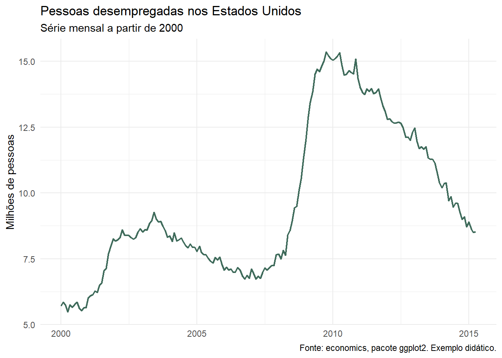
O eixo horizontal respeita a ordem temporal porque data possui a classe Date.
18.15 Escolhendo o gráfico
Antes de procurar uma função, identifique a pergunta e os tipos de variáveis.
Pergunta inicial
Variáveis
Representação inicial
Quantas observações existem em cada categoria?
Uma categórica
Barras
Como uma variável numérica se distribui?
Uma numérica
Histograma ou densidade
Como a distribuição muda entre grupos?
Categórica e numérica
Boxplot ou densidades
Como duas variáveis numéricas se relacionam?
Duas numéricas
Dispersão
Como um indicador evolui no tempo?
Data e numérica
Linha
Essa tabela é um ponto de partida, não uma regra mecânica. A escolha final depende da estrutura dos dados e da mensagem que precisa ser examinada ou comunicada.
AvisoUm gráfico pode induzir a uma interpretação equivocada
Escalas truncadas, categorias desordenadas, excesso de cores, elementos decorativos e ausência de unidade ou fonte podem distorcer a leitura. Sempre verifique se a apresentação é compatível com os dados e com a pergunta.
18.16 Salvando um gráfico
ggsave() salva o último gráfico exibido ou um gráfico armazenado em um objeto. O código abaixo é apresentado para uso no projeto do aluno e não será executado durante a renderização da apostila:
grafico_salario <-ggplot(wage1_plot, aes(x = sexo, y = wage, fill = sexo)) +geom_boxplot() +theme_minimal()ggsave(filename ="figuras/salario_sexo.png",plot = grafico_salario,width =8,height =5,dpi =300)
O caminho é relativo à raiz definida pelo aluno. A pasta figuras precisa existir antes de salvar o arquivo.
18.17 Pratique
Construa três gráficos com wage1_plot:
um gráfico de barras com o número de pessoas por sexo;
um histograma da experiência potencial;
um gráfico de dispersão relacionando experiência e permanência no emprego, com cores por sexo.
Para cada gráfico, escreva:
a pergunta que ele ajuda a investigar;
a unidade de observação;
o que cada eixo representa;
uma observação que pode ser feita sem afirmar causalidade.
DicaUma solução possível para o terceiro gráfico
ggplot(wage1_plot, aes(x = exper, y = tenure, color = sexo)) +geom_point(alpha =0.55) +labs(title ="Experiência e permanência no emprego",x ="Experiência potencial (anos)",y ="Permanência no emprego atual (anos)",color ="Sexo" ) +theme_minimal()